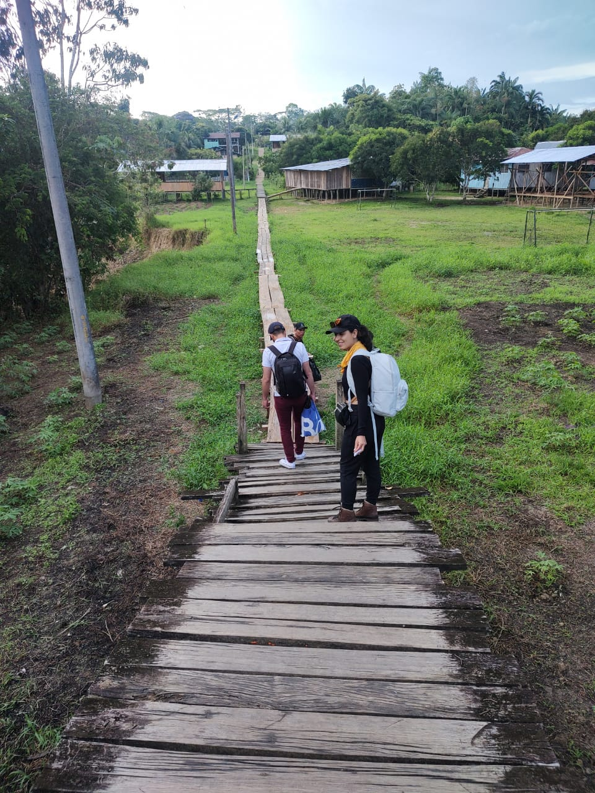

Cada núcleo integra ~50 familias en un modelo productivo sostenible de alto impacto: la meta de la Fase 1 son 650 núcleos en 130 municipios, organizados por las cinco regiones naturales de Colombia.
Toca una región en el mapa interactivo para verla en el territorio real.
Un Núcleo Inclusivo de Desarrollo Social y Tecnológico es una unidad productiva comunitaria donde ~50 familias se forman, trabajan y emprenden juntas dentro de economías emergentes de alto impacto.

Diagnóstico psicológico, social y funcional de cada familia para diseñar la ruta pertinente.
Bachillerato por ciclos, técnicos laborales y carreras profesionales con ajustes razonables (Ley 3011).
Contratos de aprendizaje de dos años con ingresos dignos dentro de los modelos de negocio del núcleo.
El núcleo opera como economía solidaria: la riqueza generada permanece en la comunidad.
Drones, conectividad satelital y DeepTech accesible al servicio del territorio.
Tu donación o la vinculación de tu organización aceleran la meta de 650 núcleos.